Help
How to find text on a page and change it — in ordinary text, in form fields, in editors, and automatically on every visit.
The popup at a glance
Open the popup from the toolbar, or with Ctrl+Shift+S. Type the text you are
looking for into Search for and the text you want instead into
Replace with, then press one of the two buttons at the bottom.
The number under the Search for box counts the matches left on the page, and
updates as you type and as you replace. The row of icons along the top opens this help
page, your recent searches, the About panel, the language setting, and your saved rules.
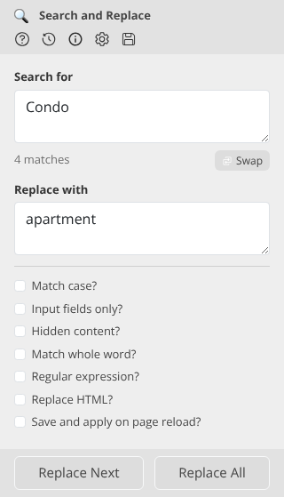
Condo are left on the page.
Remember to reload any page that was already open when the extension was installed or updated. Until it is reloaded, the extension cannot reach it.
Replace Next vs. Replace All
To replace the first occurrence of the search term, press Replace Next. You
can continue to press the button until there are no more occurrences.
To replace all occurrences of the search term, press Replace All.
There is currently no undo function. If you make a mistake, you can reload the page to restore the original text. However, you will lose any unsaved changes in text editors and in text input fields.
What each option does
Every checkbox in the popup narrows or widens what is searched. They can be combined.
Replacing text in editors and text fields
To replace text in text editors or input boxes you should check the
Input fields only? check box.
This covers plain input and textarea boxes as well as rich text
editors such as TinyMCE and CKEditor. Because nothing outside those fields is touched, it
is the safest option on a complicated page, and the one to try first if a replacement
appeared to break something.
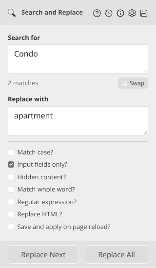
Replacing text anywhere on the page
To replace text anywhere on the page, including within the HTML structure itself, check
the Replace HTML? option. This allows you to replace text in all elements on
the page, including regular text, text editors, input fields, and even HTML tags and
attributes.
This setup alters the page HTML and may break the page. You can restore the page by reloading, but you will lose any unsaved changes in text editors and in text input fields.
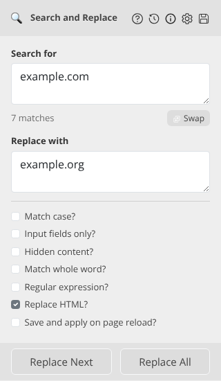
example.com on the page, link addresses included.
Matching the case of text
If you need to replace THIS but not This then you should use the
match case option.
The following setup will match Condo but not condo. It will
replace Condo with apartment in text fields that are visible on
the page.
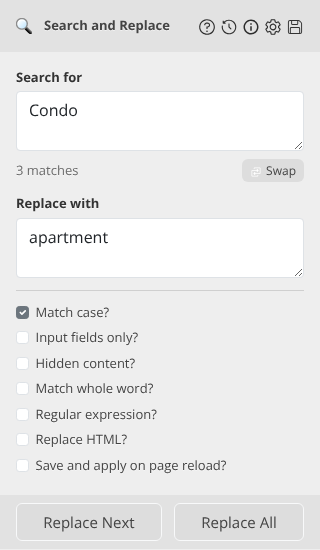
Matching whole words
If you need to replace the word partial but not partially then
you should use the Match whole word? option.
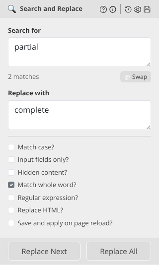
Wild Cards and Regular Expressions
If you need to match a partial search term then you should check the Regular Expressions check box and specify a wild card. You will need to have a very basic knowledge of regular expressions to use this feature. I recommend regexpal for testing
In the example below, 1\d1 means “a 1, then any digit, then a
1”, which matches 101, 111, 121 and so on up to 191.
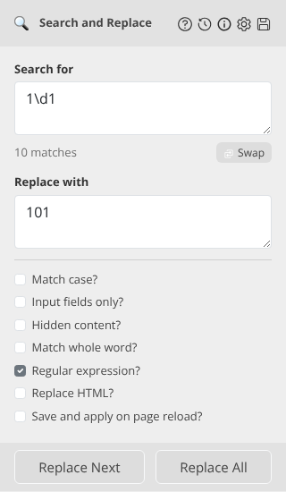
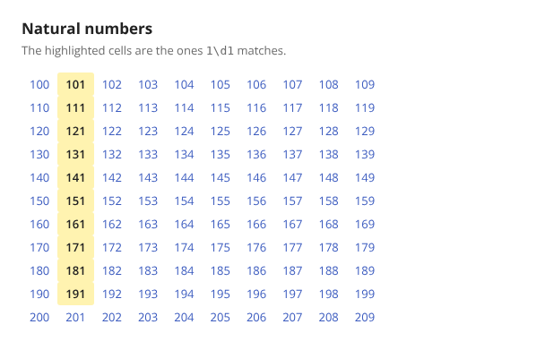
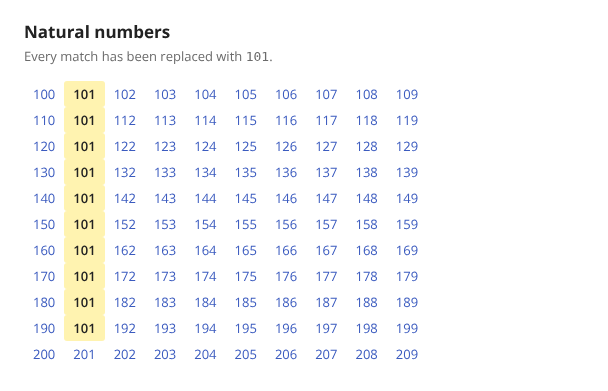
Replacing text in WordPress
The WordPress block editor keeps your post inside a frame of its own, separate from the
rest of the admin page. The extension looks inside that frame for you, so no special
options are needed: type your terms and press Replace All.
If you are using the classic editor, or a page builder whose fields are ordinary text
boxes, check Input fields only? first.
The replacement changes what is in the editor, not what is stored. Press Update in WordPress afterwards to keep it.
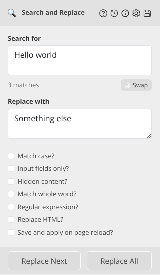
Save and apply on page reload
You can check the Save and apply on page reload? check box to save your
search and apply it on subsequent page reloads. These will take effect even after you have
closed and re-opened your browser.
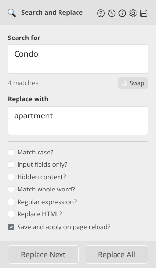
Editing saved rules
You can edit the saved rules on the Saved Rules page, which
the save icon in the popup opens. The URL Pattern field is a
regular expression, which allows you to apply the same rule to many
different websites.
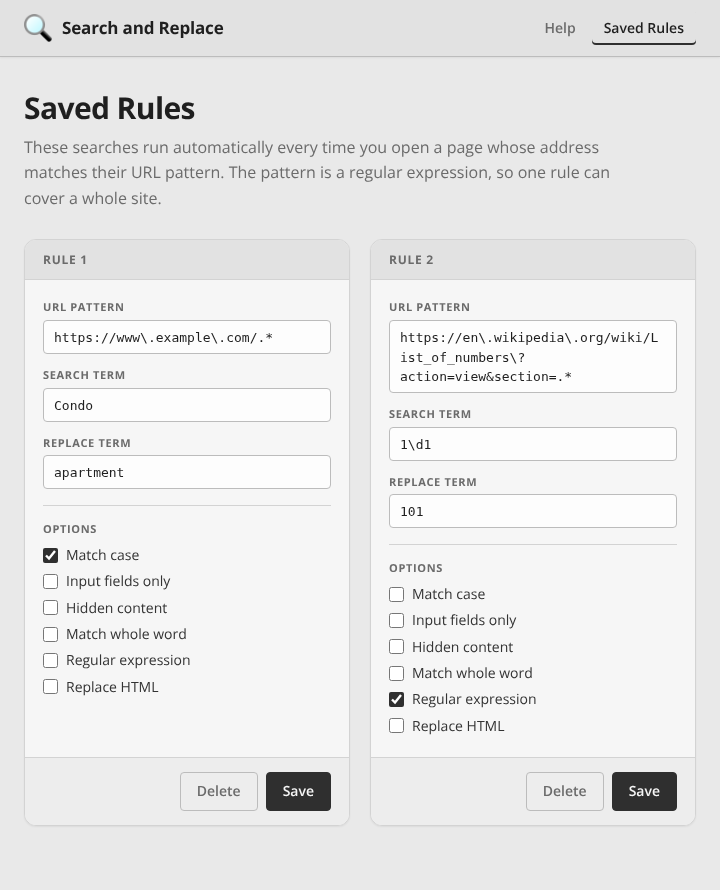
Multiple Matching Rules
If multiple rules apply to the same page, the rules will be applied in order of most specific to least specific. For example:
| URL | Search | Replace | Priority |
|---|---|---|---|
| http://www.example.com/a/deeper/nested/page | Example | A | 1 – applied first |
| http://www.example.com/some/subpage | Example | B | 2 |
| http://www.example.com | Example | C | 3 – applied last |
This means that any changes applied by the first rule will be fed into the subsequent
rules. In the above example, the text Example will have been replaced by the
rule matching http://www.example.com/a/deeper/nested/page. Subsequent rules
will therefore have no effect.
History, Swap and language
The clock icon in the popup lists your recent searches. Click one to put it back into the two boxes, or press Clear to empty the list.
Swap, between the two boxes, exchanges the search and replace terms — handy for undoing a replacement you have just made, as long as the original text has not been typed anywhere else on the page.
The cog icon holds the language setting. The extension is translated into Arabic, Chinese, English, German, Hindi, Japanese, Korean, Portuguese, Russian and Spanish; anything not yet translated falls back to English.
Reporting Issues
If the page has broken after using the extension, try refreshing the page, and then
checking Input fields only? before performing a search and replace.
Before you report
- Reload the page. A page that was already open when the extension was installed or updated cannot be reached until it is reloaded.
-
Browser pages such as
chrome://, the Chrome Web Store and the extensions page are off limits to every extension, so nothing can be replaced there. -
If the count stays at zero, try
Hidden content?, turn offMatch case?, or check that the text is not an image.
If you find a bug, please provide a detailed report on the Chrome Extension Store or on GitHub.
Please rate ★★★★★ on Chrome Store if the extension helps you!